Freelance AI automation consultant · Amsterdam
AI that does the logistics paperwork.
Eight projects built on the Microsoft AI stack. Copilot Studio agents, Power Platform apps and flows, and tested code in GitHub Copilot-ready repos, each grounded in a real problem from a decade in freight forwarding and contract logistics.
- Microsoft 365 Copilot
- Copilot Studio
- Power Apps
- Power Automate
- Dataverse
- Power BI
- AI Builder
- GitHub Copilot
Project 1 of 8
Tender Desk Copilot
RFQ gaps found in seconds, clarification letter drafted the same day.
- Copilot Studio
- Microsoft 365 Copilot
- Power Automate
- SharePoint
- Dataverse
- Azure Functions
- Microsoft Teams
- GitHub Copilot
Solution designers lose days finding gaps in RFQ lane files and requirements before pricing can start. A Python checker with nine rules, a Power Automate flow and a Copilot Studio agent list every gap, draft the questions and propose a mode per lane.
Inspired by: tender and RFQ solution design for large multinational accounts, from data discovery through to customer presentation.
-
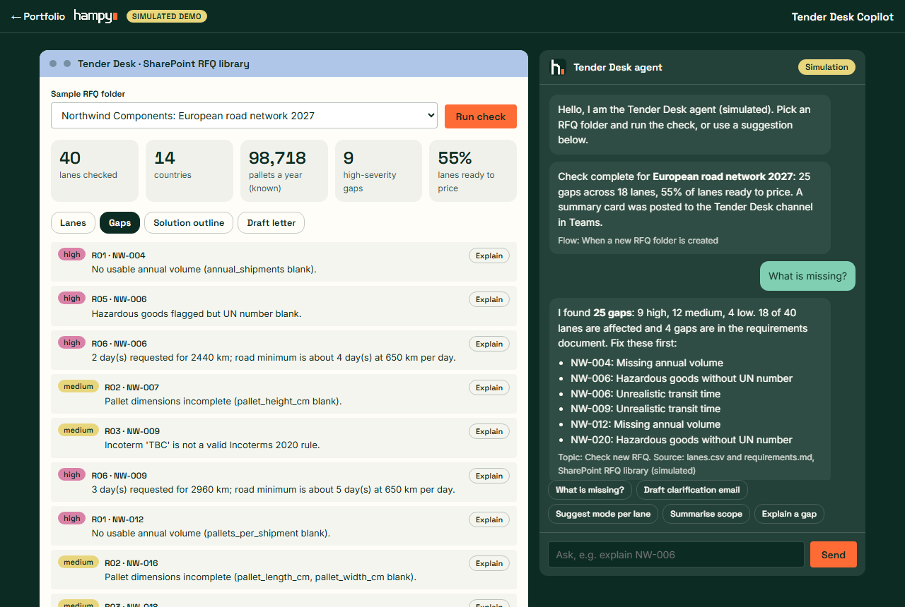
01Every gap, with a rule and a severity
A 40-lane RFQ from a fictional shipper is checked against nine rules. The agent lists the high-severity gaps to fix before pricing.
-
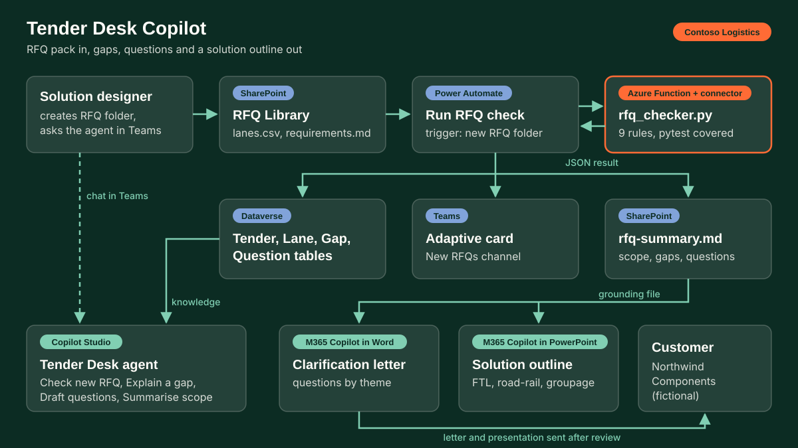
02Architecture
A new RFQ folder in SharePoint triggers a flow that runs the checker as an Azure Function, writes Dataverse rows, posts a Teams card and saves a summary file that grounds Copilot in Word and PowerPoint.
-
- kind: InvokeFlowAction id: runChecker flowId: 00000000-0000-0000-0000-000000000000 # "Tender Desk - Run RFQ check" (see power-automate/run-rfq-check.md) input: binding: rfqFolder: =Topic.RfqFolder output: binding: tenderId: Topic.TenderId lanes: Topic.LaneCount gapsHigh: Topic.GapsHigh gapsMedium: Topic.GapsMedium gapsLow: Topic.GapsLow readinessPct: Topic.ReadinessPct topGaps: Topic.TopGaps03Copilot Studio topic: Check new RFQ
The agent never computes gaps itself. It calls the checker flow and reports the counts it returns.
-
# R06 unrealistic transit time km = to_int(row.get("distance_km")) days = to_int(row.get("required_transit_days")) if km is not None and days is not None and days < min_transit_days(km): gaps.append(make_gap("R06", lid, "required_transit_days", f"{days} day(s) requested for {km} km; road minimum is about " f"{min_transit_days(km)} day(s) at {ROAD_KM_PER_DAY} km per day."))04Rule R06: transit times no truck can meet
Each rule is a few readable lines with a pytest case. The same rule runs in the demo page in JavaScript and is checked for identical output.
-
40lanes checked25gaps found9high severity10questions drafted
05Result on the sample RFQ
Computed by the checker on the synthetic Northwind Components pack: all 25 seeded gaps found, 10 clarification questions drafted in 7 themes.
-
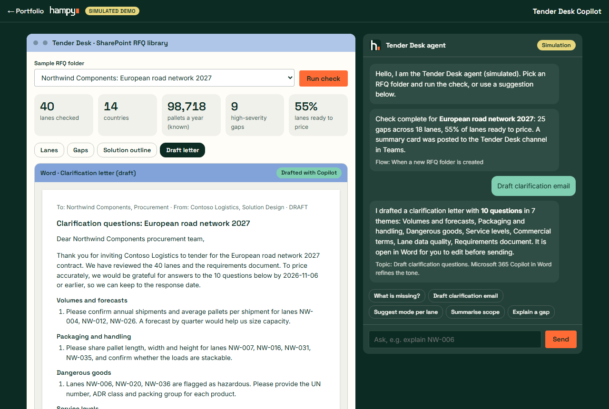
06Clarification letter, ready for Word
Questions are grouped by theme with the affected lane ids, so Copilot in Word only has to adjust tone before the letter goes to the customer.
-
Code drafted with AI pair programming and verified by 50 pytest tests and a Python to JavaScript parity check. The repo ships GitHub Copilot custom instructions (brand, British English, synthetic data only, tests first), so every follow-up change in Copilot Chat or agent mode works to the same rules.
07GitHub Copilot ready
-
08Try it
Pick a sample RFQ, run the check, then click through What is missing, Draft clarification email and Suggest mode per lane. Under a minute.
Project 2 of 8
Road-Toll Surcharge Recovery App
Per-customer toll impact, a defensible surcharge and the right approver in one screen.
- Power Apps
- Dataverse
- Power Automate
- Power BI
- Copilot in Power Apps
- Copilot Studio
- Python
- GitHub Copilot
A new per-kilometre HGV toll hits every customer contract at once, and commercial teams need each customer's impact and an approved surcharge fast. Built a tested toll model, a Power Apps surcharge screen with margin effect, a tiered Power Automate approval and a Power BI steering dashboard.
Inspired by: quantified the commercial impact of the Dutch road-freight toll across more than 400,000 annual shipments and 2,400 customers, and built the customer surcharge recovery model and executive dashboard for the Commercial Steering Committee.
-
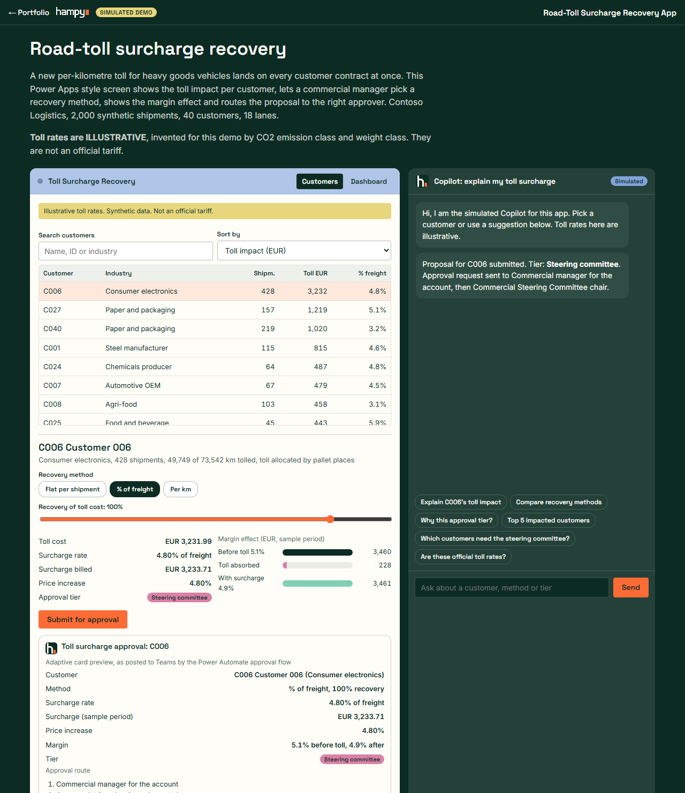
01Surcharge proposal and approval
Pick a customer, choose flat, % of freight or per km recovery, see the margin effect and submit. The approval card shows the correct tier and route. Synthetic data, illustrative rates.
-
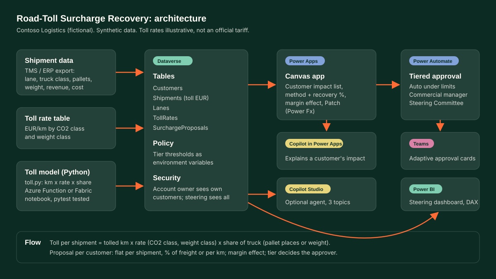
02Architecture
Dataverse holds customers, shipments, lanes, toll rates and proposals. A Python model writes toll per shipment; Power Apps, Power Automate, Teams and Power BI do the rest.
-
def allocation_share(pallets: float, weight_kg: float, basis: str) -> float: """Share of the truck used by a shipment, capped at 1.""" if basis == "pallet": share = pallets / TRUCK_PALLET_PLACES elif basis == "weight": share = weight_kg / TRUCK_PAYLOAD_KG else: raise ValueError(f"Unknown allocation basis: {basis}") return min(max(share, 0.0), 1.0) def shipment_toll(tolled_km: float, co2_class: int, weight_class: str, pallets: float, weight_kg: float, basis: str) -> float: """Toll (EUR) allocated to one shipment. Unrounded; round totals for display.""" return tolled_km * rate(co2_class, weight_class) * allocation_share(pallets, weight_kg, basis)03The toll formula
Toll per shipment is tolled km x rate by CO2 and weight class x share of the truck. Excerpt from src/toll.py.
-
ApprovalTier(incPct: Number, eur: Number): Text = If(incPct <= TierAutoMaxPct && eur <= TierAutoMaxEur, "Auto-approved", incPct <= TierCmMaxPct && eur <= TierCmMaxEur, "Commercial manager", "Steering committee");04Tier logic in Power Fx
The same thresholds drive the app, the approval flow and the Copilot answer. Excerpt from power-apps/formulas.md.
-
4.4%toll as share of freight8.7% to 4.3%margin if toll absorbed8.4%margin with 100% recovery3 / 23 / 14auto / manager / steering
05On the synthetic dataset
2,000 shipments, 40 customers, illustrative rates. Computed by toll.py and matched to the cent by the JS demo.
-
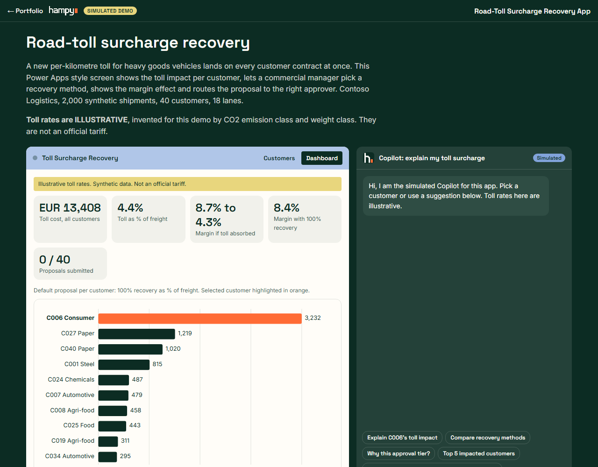
06Steering dashboard
KPI tiles, a hand-built SVG chart of the top 10 customers by toll impact and proposals by tier, mirroring the Power BI report.
-
Code drafted with AI pair programming and verified by 20 pytest tests and a Python to JavaScript parity check. The repo ships GitHub Copilot custom instructions (brand, British English, synthetic data only, tests first), so every follow-up change in Copilot Chat or agent mode works to the same rules.
07GitHub Copilot ready
-
08Try it
Open the simulated app: pick a customer, change the recovery method, submit for approval and ask the Copilot panel to explain the impact.
Project 3 of 8
Network Scenario Agent
Per-supplier mix of direct, milk-run and cross-dock: 7.1% below the best single design.
- Copilot Studio
- Azure Functions
- Power Platform custom connector
- Power Automate
- Dataverse
- Power BI
- GitHub Copilot
An automotive plant's 60 inbound suppliers can ship direct, by regional milk-run or via a cross-dock, and the best choice moves with diesel, handling and stop limits. A Copilot Studio agent calls a Python network engine through a custom connector, compares cost, CO2 and truck movements, and explains the recommended mix.
Inspired by: designed a pan-European inbound network for an automotive OEM plant, comparing direct full-load, regional milk-run and cross-dock designs across 180+ supplier lanes on cost, CO2 and vehicle movements; built an optimisation engine (KNIME and Log-Hub) that routes 40,000 orders across six facilities in around two hours.
-
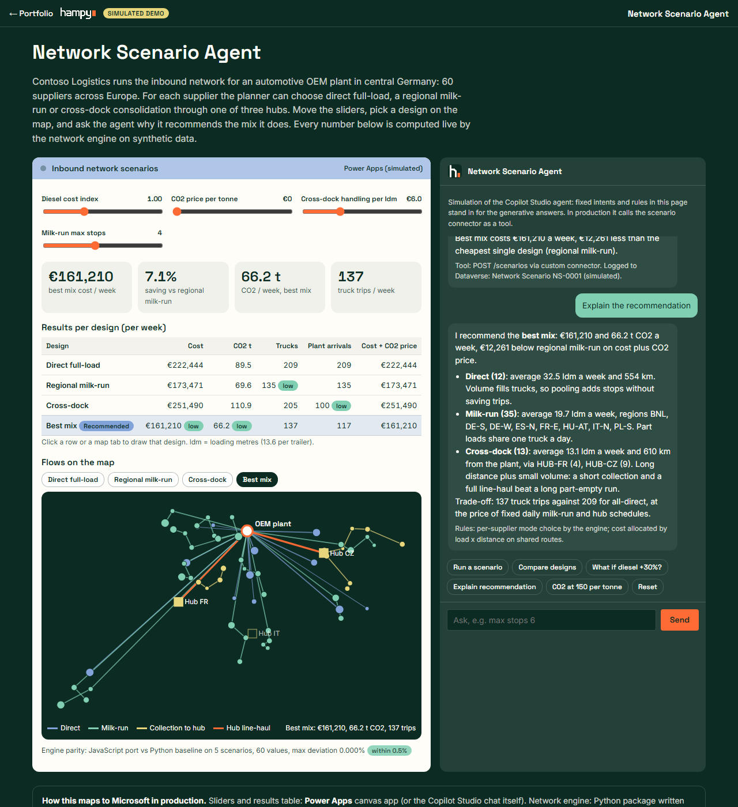
01Four designs, one answer
Sliders for diesel, CO2 price, handling and milk-run stops drive the engine; the agent explains why the best mix wins.
-
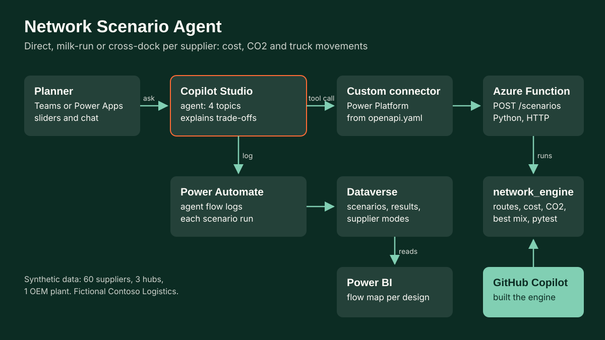
02Architecture
Copilot Studio calls an Azure Function through a custom connector; runs are logged to Dataverse by Power Automate and mapped in Power BI.
-
for _ in range(max_passes): improved = False for s in suppliers: current = best["assign"][s["id"]] for m in MODES: if m == current: continue trial_assign = dict(best["assign"]) trial_assign[s["id"]] = m trial = evaluate(suppliers, plant, hubs, trial_assign, p) if trial["objective"] < best["objective"] - 0.01: best = trial current = m improved = True if not improved: break03Best mix never loses to a single design
The search seeds from the best pure design and only accepts single-supplier moves that cut cost plus CO2 price.
-
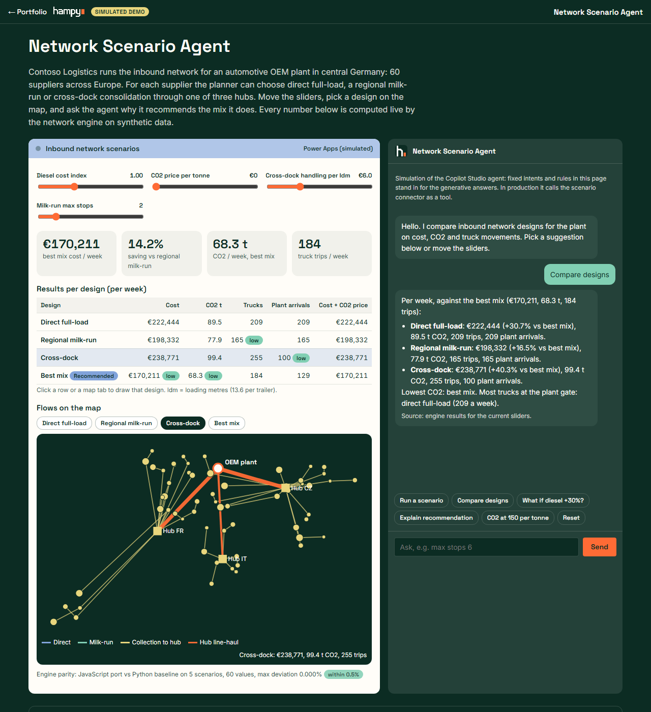
04What if the stop limit drops?
With only two stops per milk-run, cross-dock consolidation becomes the better route for 21 of 60 suppliers.
-
7.1%cheaper than best single design137truck trips vs 209 all-direct66.2 tCO2 a week vs 89.5 t direct22pytest checks passing
05Baseline week, synthetic network
Computed by the engine on 60 suppliers and 3 hubs. The JS demo matches the Python baseline within 0.001%.
-
- kind: InvokeConnectorAction id: callRunScenario connectionReference: cr_contosonetworkscenarios connectionProperties: mode: Invoker operationId: RunScenario input: binding: body: |- ={ fuel_index: Topic.FuelIndex, co2_price_t: Topic.Co2Price, handling_ldm: If(IsBlank(Topic.Handling), 6, Topic.Handling), max_stops: If(IsBlank(Topic.MaxStops), 4, Topic.MaxStops) }06Agent topic: Run a scenario
The topic calls the connector action and logs the run before answering.
-
Code drafted with AI pair programming and verified by 22 pytest tests and a Python to JavaScript parity check on 80 values. The repo ships GitHub Copilot custom instructions (brand, British English, synthetic data only, tests first), so every follow-up change in Copilot Chat or agent mode works to the same rules.
07GitHub Copilot ready
-
08Try it
Move the sliders, switch designs on the map and click through the agent's four topics in under a minute.
Project 4 of 8
Inbound Risk Early-Warning Agent
Flags late inbound shipments in transit; critical band 97% precise in backtest.
- Copilot Studio
- Power Automate
- Azure Functions
- Dataverse
- Microsoft Teams
- Power BI
- GitHub Copilot
Delayed or lost inbound shipments were noticed too late, often by the customer. A transparent 0-100 risk score with plain-word reasons, Teams alerts and a Copilot Studio agent warns the control tower while there is still time to act.
Inspired by: inbound-risk dashboard sustaining 99% on-time through COVID-19; lost-shipment postcode analysis cutting lost shipments 64%.
-
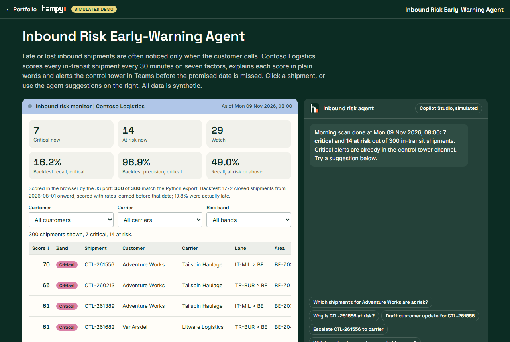
01300 shipments, scored every 30 minutes
Each in-transit shipment gets a 0-100 score from seven weighted factors, sorted by risk and filterable by customer and carrier.
-
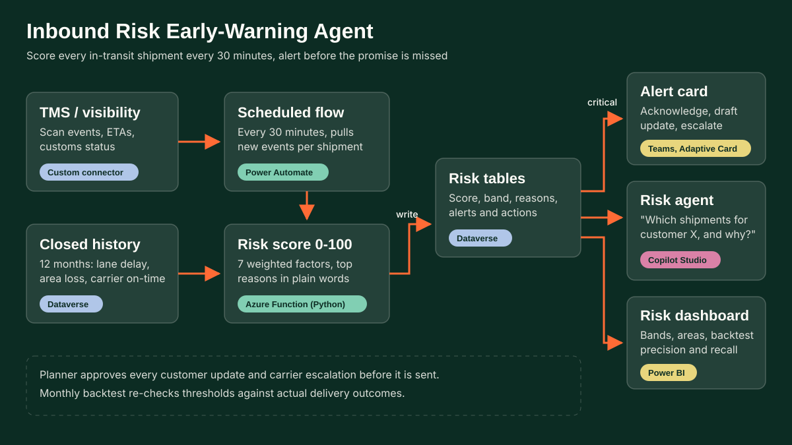
02Architecture
A scheduled flow pulls tracking events, an Azure Function scores them, Dataverse stores scores and reasons, Teams, Copilot Studio and Power BI use them.
-
return { "lane": clamp01((f["lane_delay_rate"] - 0.06) / 0.24), "area": clamp01((f["area_loss_rate"] - 0.004) / 0.016), "carrier": clamp01((0.95 - f["carrier_on_time"]) / 0.20), "dwell": clamp01((ratio - 1.0) / 2.0), "customs": 1.0 if f["customs_status"] == "held" else 0.5 if f["customs_status"] == "pending" else 0.0, "slack": clamp01((1.0 - slack) / 2.0), "calendar": cal, }03Every point is explainable
Each factor is a straight line between no concern and full concern, times a fixed weight. Weights sum to 100.
-
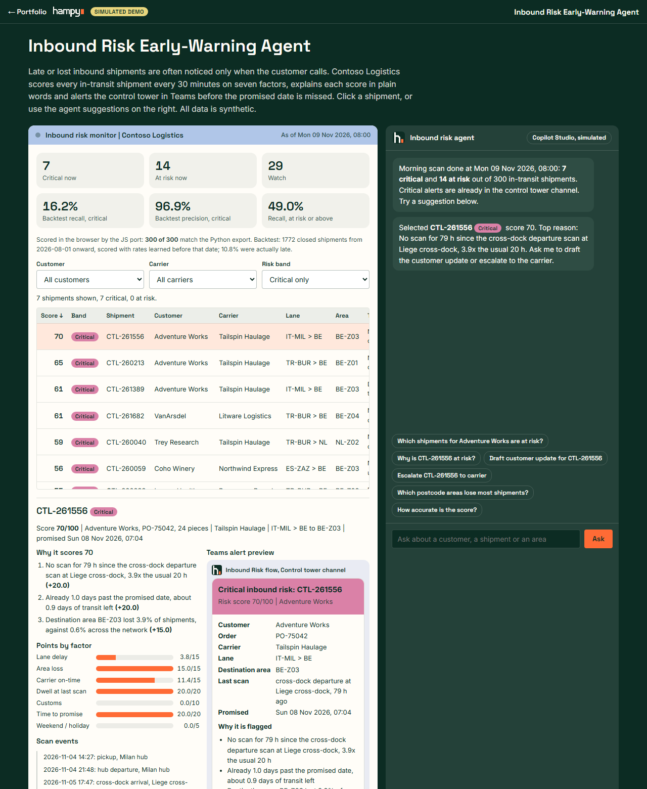
04Reasons and a Teams alert
Clicking a shipment shows its top reasons, points per factor, scan history and the Adaptive Card 1.5 posted to the control tower channel.
-
96.9%critical precision49.0%late shipments caught at risk or above2high-loss postcode areas found from history
05Backtest on later shipments
Rates learned before 1 August 2026, then tested on 1,772 later closed shipments (synthetic) against what actually happened.
-
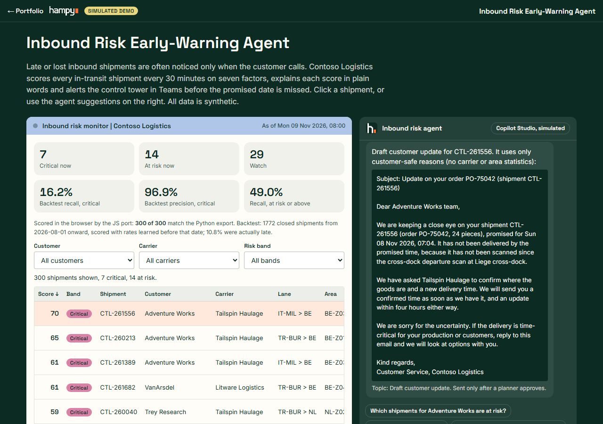
06Customer update, drafted
The agent explains a score and drafts a customer email using only customer-safe causes, for a planner to approve.
-
Code drafted with AI pair programming and verified by 28 pytest tests and a parity check on all 300 risk scores. The repo ships GitHub Copilot custom instructions (brand, British English, synthetic data only, tests first), so every follow-up change in Copilot Chat or agent mode works to the same rules.
07GitHub Copilot ready
-
08Try it
Sort and filter the list, open a critical shipment and click through the agent suggestions in under a minute.
Project 5 of 8
Executive KPI Briefing Copilot
Monday account brief drafted from one governed dataset, every sentence traced to a number.
- Power BI
- Power Automate
- Copilot Studio
- Microsoft 365 Copilot
- Dataverse
- Teams
- GitHub Copilot
Leadership had dashboards but not the story, and analysts wrote the weekly account brief by hand. Built a variance engine with materiality ranking over a Power BI semantic model and an agent that drafts the brief, slide outline and Teams post for analyst approval.
Inspired by: executive Power BI dashboards consolidating the top six global customers into a single KPI view, and governed single-source datasets replacing fragmented reporting.
-
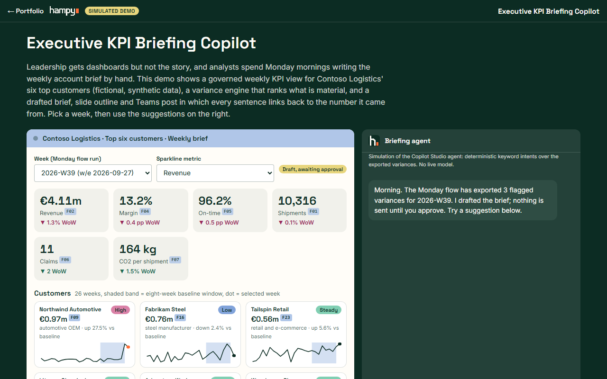
01Dashboard to story
Six fictional top customers over 26 weeks: KPI tiles, hand-built sparklines with the eight-week baseline window, and only the variances that pass both threshold and z-score gates.
-
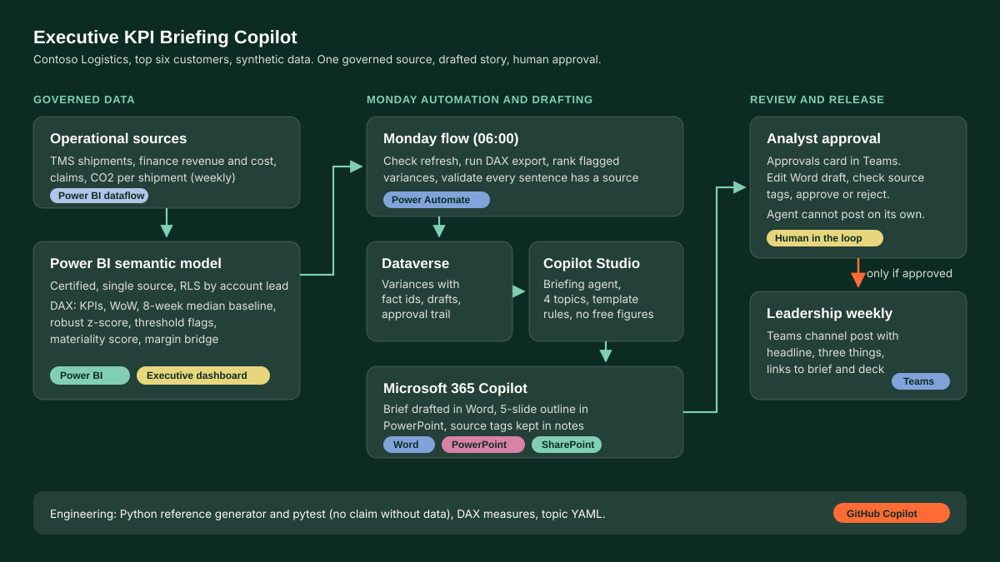
02Architecture
A certified Power BI semantic model feeds a Monday Power Automate flow. Copilot Studio and Microsoft 365 Copilot draft in Word, PowerPoint and Teams; an analyst approves before release.
-
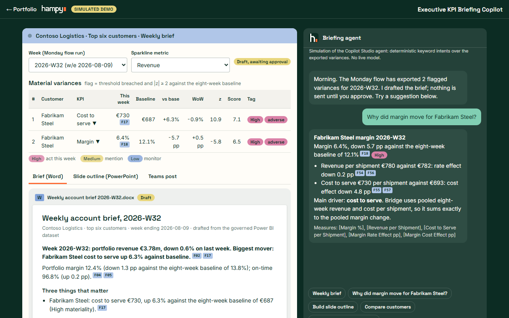
03Why did margin move?
The agent splits a margin change into a rate effect and a cost effect from pooled revenue and cost per shipment. For the seeded Fabrikam Steel dip it points to cost to serve.
-
for s in sentences: if not s["refs"]: problems.append(f"no refs: {s['text']}") continue missing = [r for r in s["refs"] if r not in book.facts] if missing: problems.append(f"unknown refs {missing}: {s['text']}") continue allowed = set() for r in s["refs"]: for d in book.displays(r): allowed |= number_tokens(d) stray = number_tokens(s["text"]) - allowed if stray: problems.append(f"unsupported numbers {sorted(stray)}: {s['text']}")04No claim without data
Every sentence carries fact refs. The validator rejects a sentence with no source, an unknown source, or any number that is not in its referenced facts.
-
756customer x KPI checks20flagged variances420sentences, all traced17pytest tests passing
05Result on synthetic data
Computed by src/briefing.py over 18 briefed weeks. All three seeded events ranked first in their weeks; no quiet week raised a High flag.
-
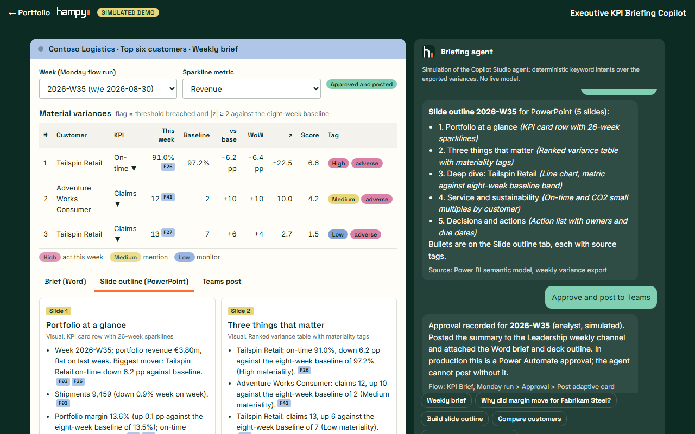
06Slides and approval
The same facts produce a five-slide outline for PowerPoint and a Teams post that is only released after an analyst approves.
-
Code drafted with AI pair programming and verified by 17 pytest tests, including a check that every sentence in the brief traces to a number. The repo ships GitHub Copilot custom instructions (brand, British English, synthetic data only, tests first), so every follow-up change in Copilot Chat or agent mode works to the same rules.
07GitHub Copilot ready
-
08Try it
Pick a week, click a source tag to see its DAX measure, ask why margin moved, build the slide outline and approve the Teams post.
Project 6 of 8
AI Brand Theme Systems
One tokens file per brand generates web, Power Apps and Office themes, contrast-checked.
- GitHub Copilot
- Microsoft 365 Copilot
- Power Apps
- Copilot Studio
- SharePoint
- GitHub Actions
- Node.js
Brand colours drift when they are copied by hand into apps, decks and Copilot Studio agents. I built a token pipeline that generates CSS, Tailwind, Power Apps and Office themes plus a WCAG report, used for my hampy brand and a DP World corporate theme in DPark.
Inspired by: Build my own analytical tools and automations to speed up day-to-day work.
-
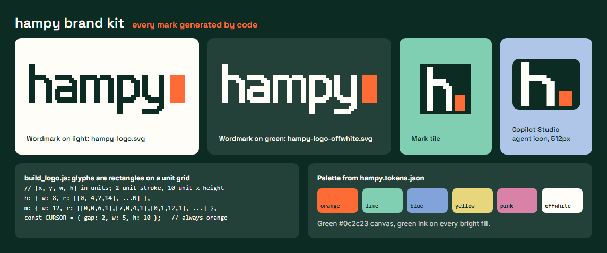
01hampy brand kit, drawn in code
Wordmark, mark tile and the 512px Copilot Studio agent icon are rectangles on a unit grid, generated by one script. Same palette everywhere.
-
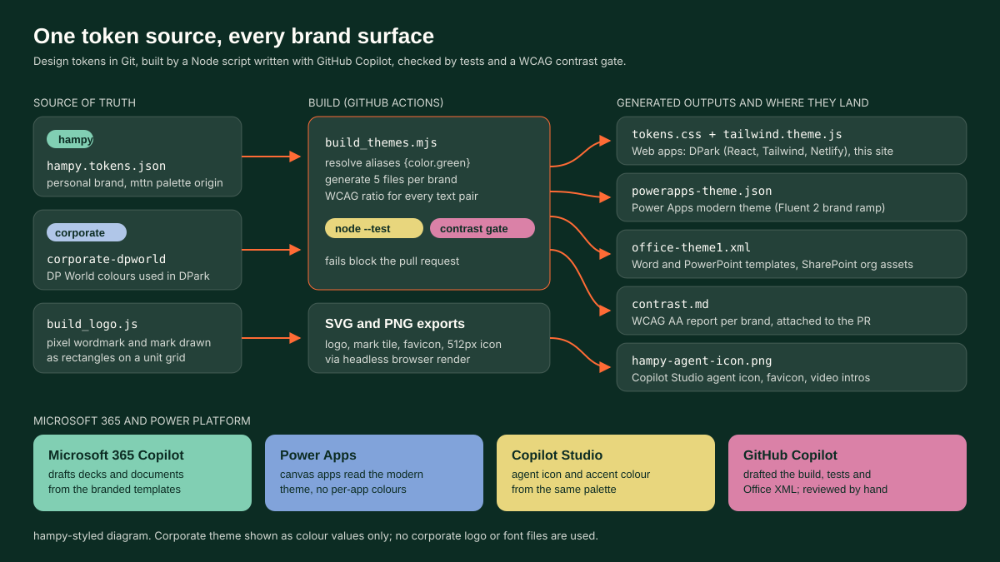
02Architecture
Tokens in Git, a Node build with tests and a contrast gate, and five generated files that land in web apps, Power Apps, Office templates and Copilot Studio.
-
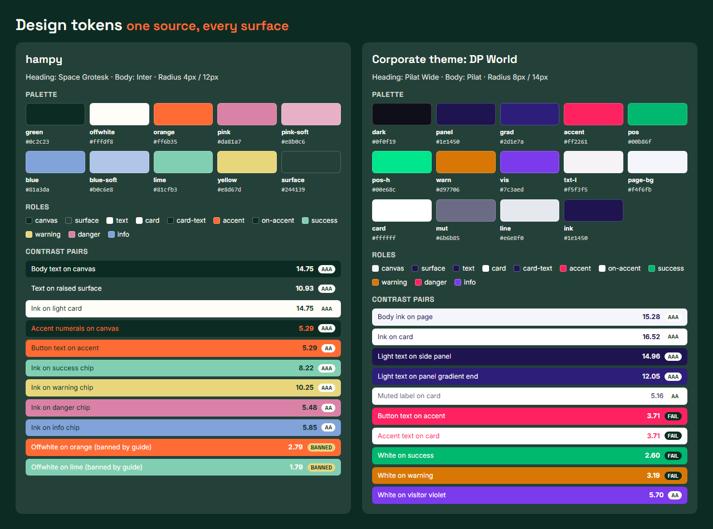
03Token specimen
Generated from both tokens files: palette, roles and every tested text pair with its WCAG grade.
-
export function relativeLuminance(hex) { const [r, g, b] = hexToRgb(hex).map((c) => { const s = c / 255; return s <= 0.04045 ? s / 12.92 : ((s + 0.055) / 1.055) ** 2.4; }); return 0.2126 * r + 0.7152 * g + 0.0722 * b; } export function contrastRatio(fg, bg) { const a = relativeLuminance(fg), b = relativeLuminance(bg); return (Math.max(a, b) + 0.05) / (Math.min(a, b) + 0.05); }04WCAG contrast in the build
The same formula runs in the build, the tests and the live checker on the demo page.
-
21text pairs checked0hampy fails4corporate pairs flagged5files per brand
05Contrast results
Computed by the build. hampy passes every allowed pair; the corporate report flags white on the pink accent (3.71:1) as large text only.
-
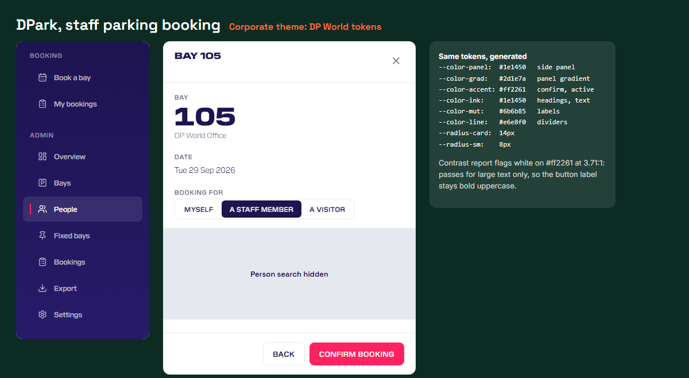
06DPark in the corporate theme
The staff parking booking app (React, Tailwind, Netlify Functions) uses the same token values. Crops show no logo; the person search is covered.
-
Code drafted with AI pair programming and verified by 7 node tests covering the contrast maths and every generated file. The repo ships GitHub Copilot custom instructions (brand, British English, synthetic data only, tests first), so every follow-up change in Copilot Chat or agent mode works to the same rules.
07GitHub Copilot ready
-
08Try it
Switch between hampy and the corporate theme, watch the sample UI restyle, test any colour pair and read the generated JSON and XML.
Project 7 of 8
Document Data-Extraction Models
50 invoices checked in 1.4 s: 8 of 8 seeded errors caught, 0 false approvals.
- Python
- Anthropic SDK
- pdfplumber
- SQLite
- Streamlit
- AI Builder
- Power Automate
- Dataverse
- Copilot Studio
Accounts payable teams key supplier invoices by hand at about three minutes each. I built a Python agent that reads PDF invoices, checks them against vendor and PO master data, and only sends exceptions to a person, then mapped it to AI Builder, Power Automate, Dataverse and Copilot Studio.
Inspired by: P&O integration analytics into governed single-source datasets.
-
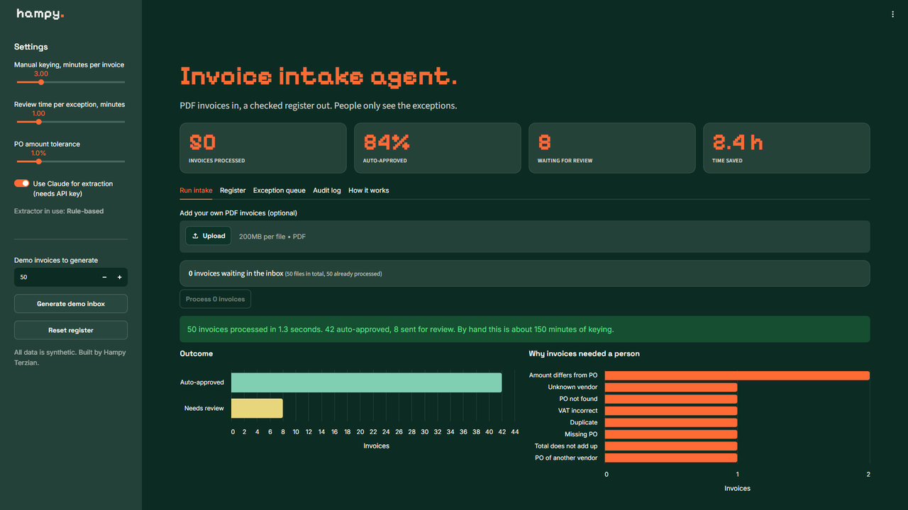
01One click, 50 invoices
The built Streamlit app after a run: 42 auto-approved, 8 sent for review, and why each one needed a person.
-
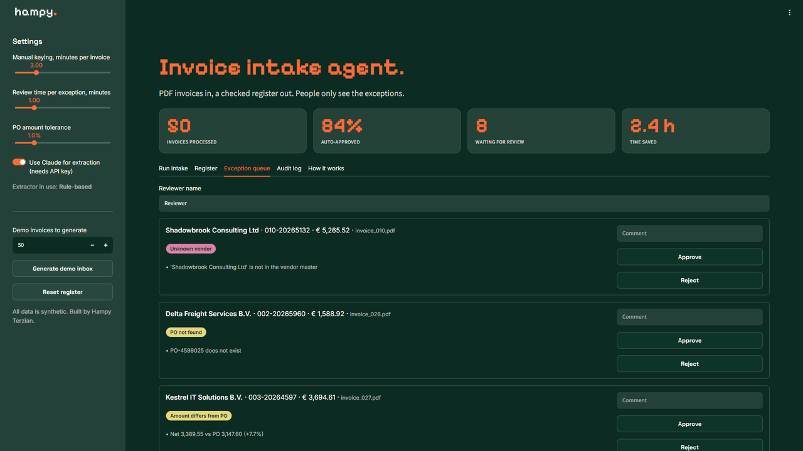
02Exception queue with reasons
Reviewers only see exceptions, each with the reason in plain words and approve or reject with a comment.
-
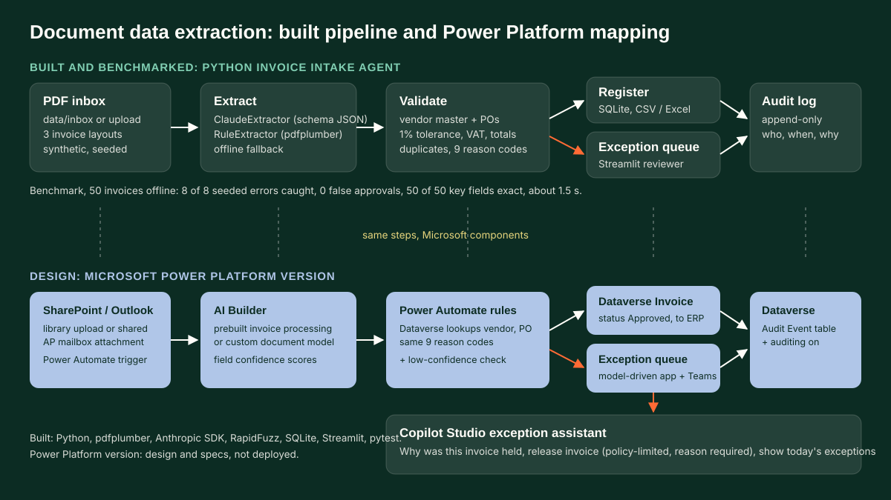
03Architecture
Top: the built Python pipeline. Bottom: the same steps mapped to SharePoint, AI Builder, Power Automate, Dataverse, Teams and Copilot Studio (design, not deployed).
-
if not f.po_number: reasons.append(("MISSING_PO", "No purchase order reference on the invoice")) elif f.po_number not in md.pos: reasons.append(("PO_NOT_FOUND", f"{f.po_number} does not exist")) else: po = md.pos[f.po_number] if vid and po["vendor_id"] != vid: reasons.append(("PO_VENDOR_MISMATCH", f"{f.po_number} belongs to vendor {po['vendor_id']}, not {vid}")) if f.net_amount is not None: diff = (f.net_amount - po["net_amount"]) / po["net_amount"] if abs(diff) > rules.amount_tolerance: reasons.append(("AMOUNT_MISMATCH", f"Net {f.net_amount:,.2f} vs PO {po['net_amount']:,.2f} ({diff:+.1%})"))04Deterministic PO controls
Real excerpt from intake/validate.py. Extraction can use AI; approval decisions stay rule-based and explainable.
-
8/8seeded errors caught0false approvals50/50key fields exact142 minkeying saved of 150
05Benchmark on 50 synthetic invoices
Re-run offline with the rule-based reader across three layouts. Synthetic data; real supplier documents will differ.
-
06Watch the run
28 seconds from the demo video: the inbox, one click, and the results with reasons.
-
Developed with AI pair programming, not GitHub Copilot. The benchmark figures come from a fresh run of the original build. The Power Platform version is a written design and has not been deployed.
07AI pair programming
-
08Try it
Run a simulated intake on 12 of the app's invoices, see field confidence and every check, release an exception through the assistant and watch the audit trail.
Project 8 of 8
Live Wedding Website with AI Photo Album
Guests sign in by phone and see the wedding photos face recognition finds them in.
- Astro
- Fastify
- PostgreSQL + pgvector
- Immich (InsightFace)
- Twilio Verify
- Docker
- Cloudflare Tunnel
Wedding guests had no private, easy way to find the photos they appear in. A live wedding website, now in production, combines SMS sign-in, guest uploads, manager moderation and an AI photo album that groups faces into people for the couple to link to guests.
Side project outside the CV roles: a production web platform, self-hosted end to end.
-
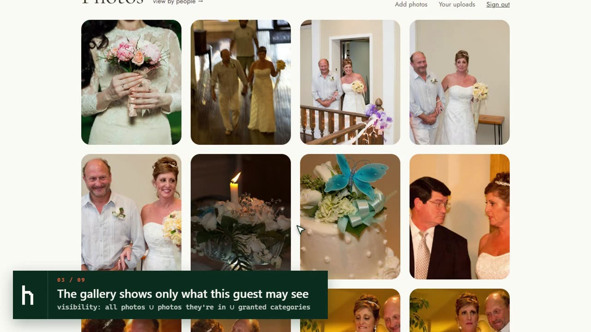
01Each guest sees only their photos
Guests sign in with an SMS code, then browse a gallery filtered to what their access allows. Photos: Wikimedia Commons, CC0 / CC BY, see credits.
-
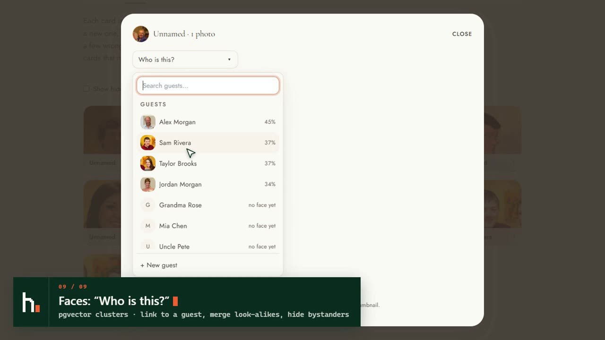
02AI faces: "Who is this?"
Faces detected by InsightFace are clustered into people in pgvector. A manager links each person to a guest, ranked by similarity, or hides bystanders. Photos: Wikimedia Commons, CC0 / CC BY, see credits.
-
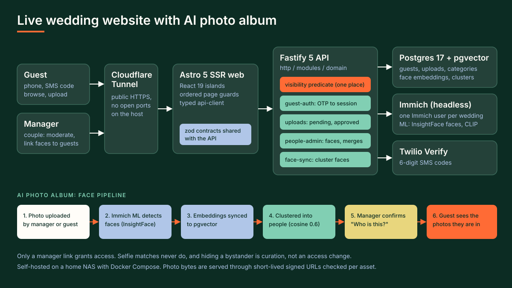
03Architecture
Astro SSR web and a Fastify API over Postgres with pgvector, a headless Immich backend for storage and face detection, and Twilio Verify for sign-in, self-hosted behind a Cloudflare Tunnel.
-
const taggedIn = sql`EXISTS ( SELECT 1 FROM asset_faces af JOIN face_clusters fc ON fc.id = af.cluster_id WHERE af.immich_asset_id = ${t}.immich_asset_id AND af.wedding_id = ${weddingId} AND fc.guest_id = ${viewer.guestId} AND fc.guest_link_source = 'manager' )`; return sql`(${base} AND (${taggedIn} OR ${inTickedCategory}))`;04One access rule, in SQL
The single visibility predicate: a guest sees a photo only if a manager linked them to a face in it, or granted them its category. Selfie matches never grant access.
-
9architecture decision records12design specs142test files14API modules
05Engineering discipline
Counted from the repository: decision records, design specs, test files and API modules. CI checks format, lint ratchet, types, tests and build on every push.
-
06Walkthrough
28 seconds of the real web build: gallery, people pages and face review. Sample photos from Wikimedia Commons, fictional names.
-
Built spec first with an AI coding agent: 12 specs, agent instructions kept in the repo, test-first house rules and CI gates. Privacy rules were recorded as decision records. The same instruction files work with GitHub Copilot agent mode.
07AI pair programming
-
08Watch the full flow
Gallery, lightbox, people pages and face review in one clip; the screenshots cover sign-in, upload and moderation. Source code is in a private repository.
Have a process that eats your team's week?
I am Hampy Terzian, a solutions design manager in logistics with an industrial engineering background and an MIT MicroMasters in Supply Chain Management. I find the manual work worth automating, build it on the tools you already license, and say plainly when something is not worth automating.
Bonus: Process Intake Agent, a Copilot Studio agent that interviews a business user about a manual process and recommends the right automation route.
Projects 1 to 5 use a fictional company and synthetic data. Demos simulate the agents in the browser; each project folder holds the Copilot Studio, Power Automate and Dataverse artefacts to build them in a tenant.
© 2026 Hampy Terzian